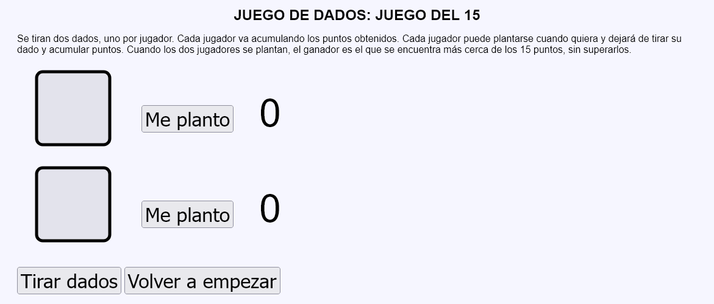
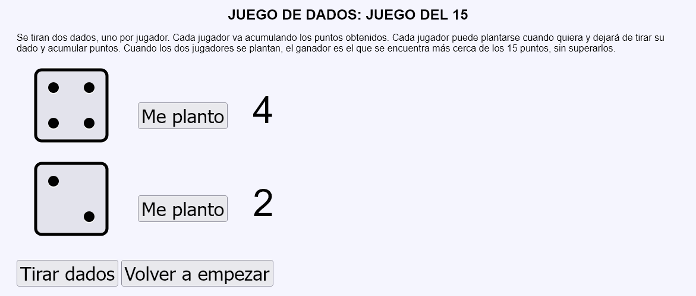
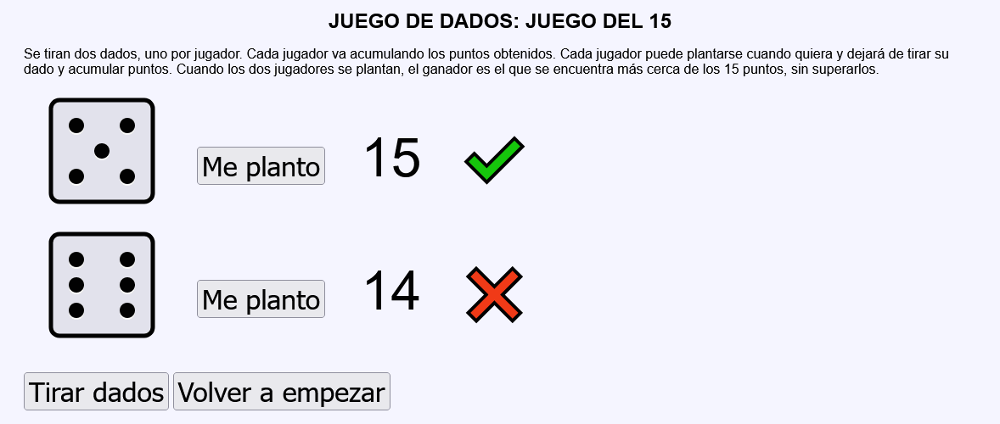
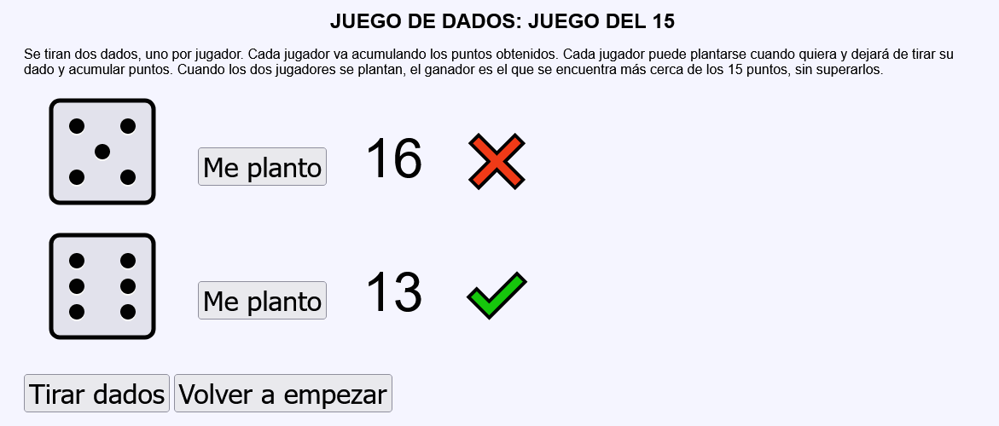
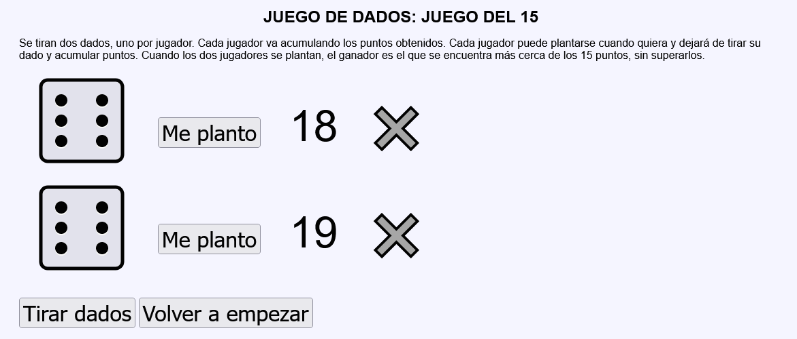
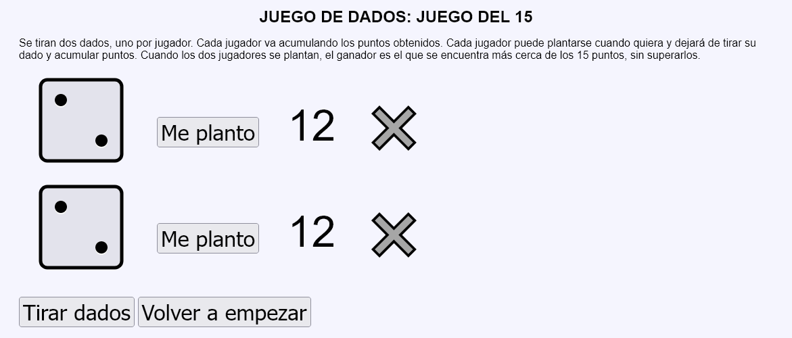

Juego de dados - Ejemplo de programa
Nota: El día del examen los alumnos no tienen acceso a este ejemplo, solamente tienen acceso a las capturas del apartado anterior.
Un ejemplo de programa puede probarse en la ventana siguiente:
En este ejercicio se debe crear un programa que simule una partida de un juego de dados. Dos jugadores tiran dados y acumulan los puntos obtenidos. En cualquier momento se pueden plantar. la partida termina cunado los dos jugadores se plantan. El jugador que esté más cerca de obtener 15 puntos sin superarlos, gana la partida.






<table style="font-size: 4rem;">
<tr>
<td><img src="img/dados/2 .svg" alt="2 " width="140" height="140"></td>
<td><button type="submit" name="accion" value="plantaA">Me planto</button></td>
<td>16 </td>
<td>❌ </td>
</tr>
<tr>
<td><img src="img/dados/3 .svg" alt="3" width="140" height="140"></td>
<td><button type="submit" name="accion" value="plantaB">Me planto</button></td>
<td>15 </td>
<td>✔️ </td>
</tr>
</table>
Nota: El día del examen los alumnos no tienen acceso a este ejemplo, solamente tienen acceso a las capturas del apartado anterior.
Un ejemplo de programa puede probarse en la ventana siguiente: